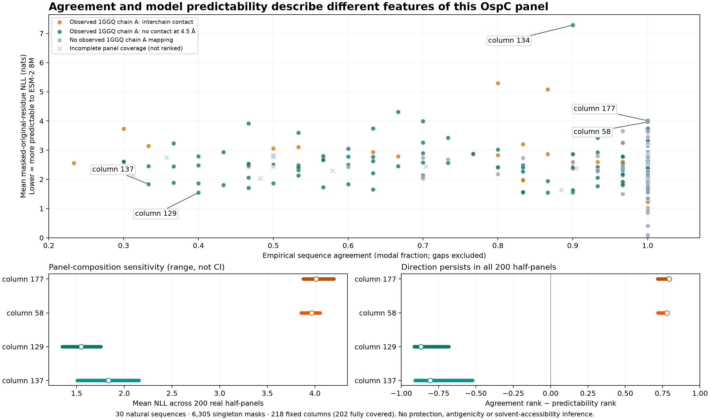
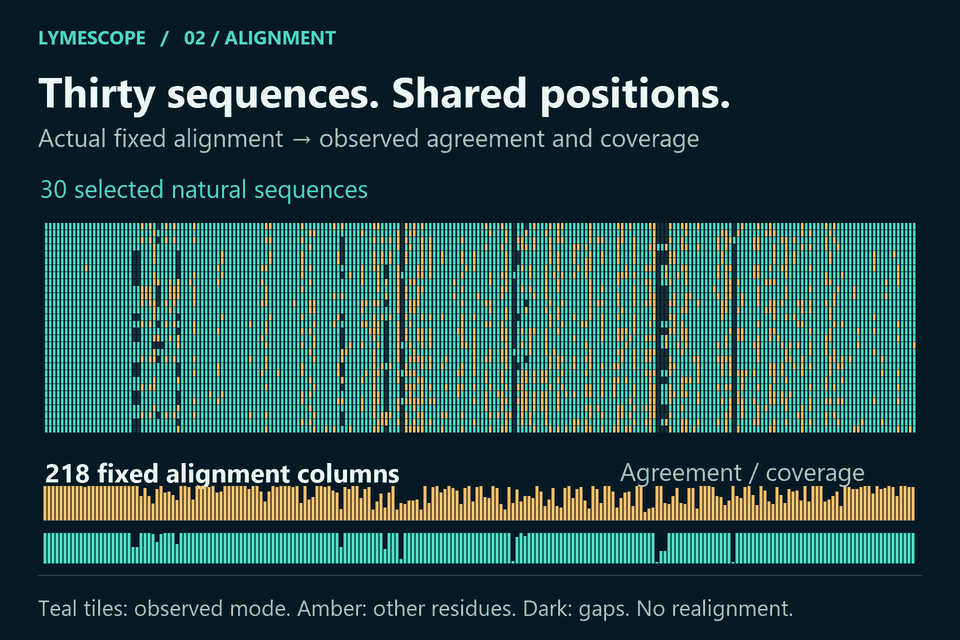
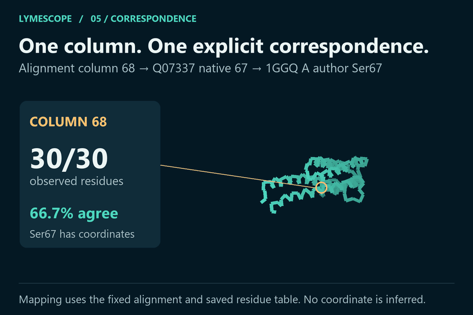
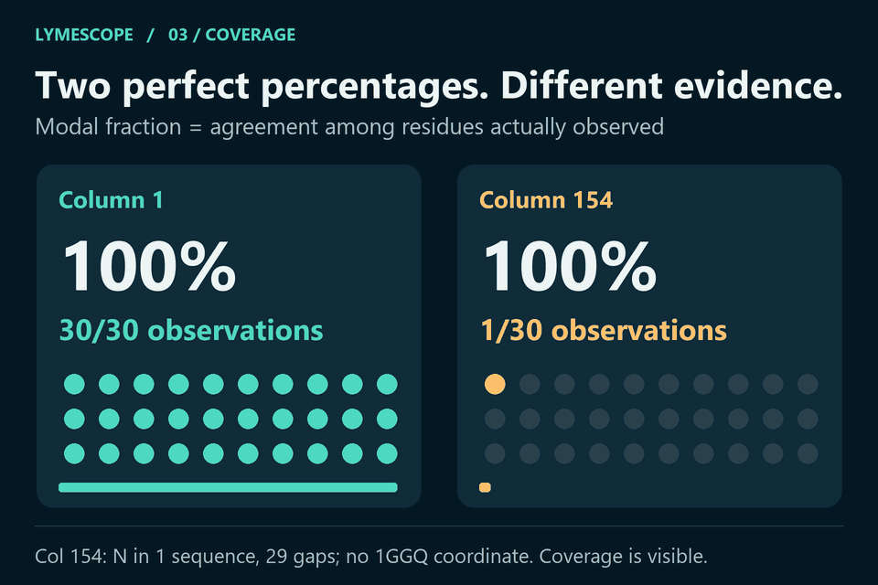
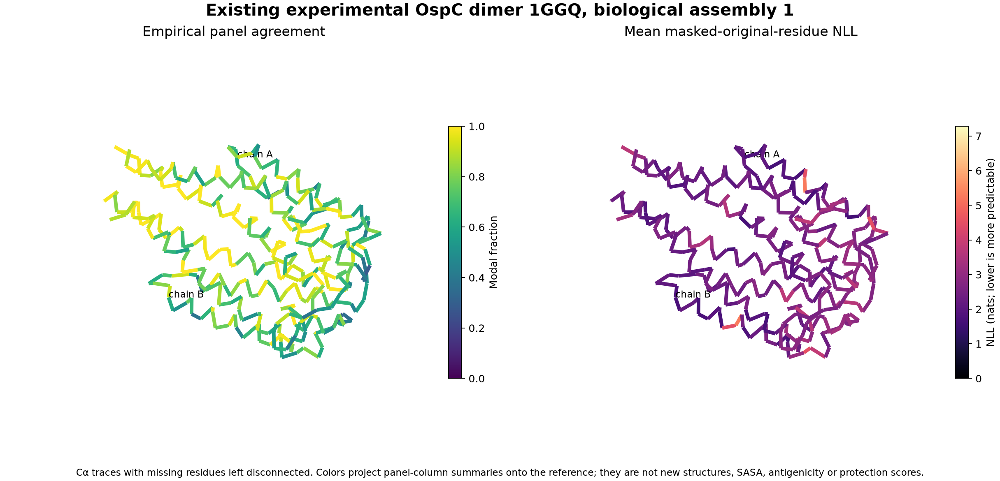
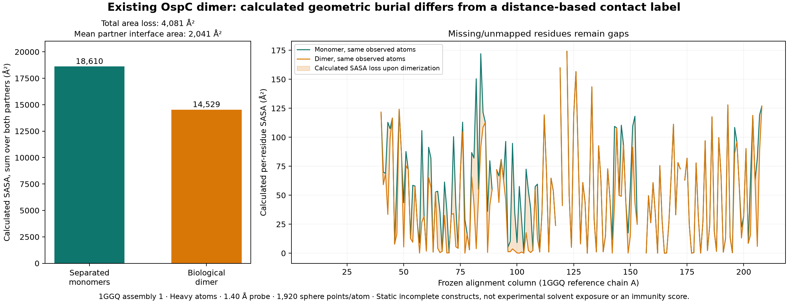

Local preview. GitHub rendering has not been verified.
LYMESCOPE
Making the invisible biology of Lyme disease explorable.
More than 80,000 Lyme cases are reported to CDC each year. A separate claims-based estimate suggests 476,000 people are diagnosed and treated; these are different measures, with different limitations. CDC · Evidence C01
LymeScope focuses on OspC, outer surface protein C, a Borrelia surface antigen with experimentally studied structures and antibody interactions. Its purpose is to let researchers challenge a seemingly convincing residue score by tracing it to observations, model assumptions and coordinates. Experimental OspC structure · B11–OspC study
Question: Within 30 selected natural OspC sequences, does empirical sequence agreement track a protein language model’s ability to predict each original residue? Result: A completed personal-GB10 experiment scored 6,305 singleton masks and found weak descriptive agreement–predictability correlation across 202 fully covered columns (Spearman rho 0.134696). Limit: This selected-panel result does not establish immune protection, antibody accessibility, a vaccine target or clinical utility. C02 · C04 · C07

Start with the real molecule. Deposited experimental 1GGQ chains A/B, with rigid camera rotation—not a predicted fold or molecular dynamics. Amber is the 8 Å Cα proximity proxy, distinct from the 4.5 Å heavy-atom contacts and calculated SASA below. Static image · Experimental source · Geometry and limits
This page is the complete scientific presentation. Read the findings, visuals, methods and limits below without leaving GitHub. The optional interactive workbench, one-page summary and claim index provide deeper inspection. Pages is not live yet.

Original saved scientific output. Lower NLL means more predictable under the pinned checkpoint. Incomplete columns remain visible and are excluded from full-coverage ranks. Full-size SVG · Exact data.
How to read the evidence
| Label |
Meaning here |
| MEASURED |
Recorded execution or observation, with its hardware and timing scope stated |
| VERIFIED EXPERIMENTAL STRUCTURE |
Pre-existing deposited coordinates with checked assembly and sequence correspondence |
| CALCULATED |
A reproducible statistic or geometric quantity derived from saved data |
| EXPLORATORY |
A descriptive or held-region diagnostic with limited generalizability; not functional validation |
| PLANNED |
A prepared workflow or research proposal, not a completed measurement |
| NOT RUN |
No result exists for that execution; a placeholder is not evidence |
UNVERIFIED marks an unresolved identity or observation, such as the VAST backend. A result may be measured on a personal Spark while its biological interpretation remains exploratory.
| Guided story |
Inspect |
Evidence boundary |
| 1 · The coverage trap |
Column 154: 100% modal agreement, 1/30 observations |
One observation cannot support broad conservation |
| 2 · The model disagreement |
Column 177: G:30, NLL 4.01135; column 129: mixed residues, NLL 1.54783 |
NLL measures conditional predictability, not conservation or immunogenicity |
| 3 · The homodimer |
Experimental 1GGQ A/B; verified contacts and separate calculated SASA |
Static geometry is not physiological antibody accessibility |
| 4 · What experiments add |
Verified B11 footprint and a negative predeclared diagnostic; supporting B5 context |
No incremental predictive value demonstrated; 8C1 remains literature-only |
C03 · C08 · C09–C12 · Independent evidence C15
What was measured
| Evidence |
Recorded result |
Scope |
| Frozen natural panel |
30 sequences; 218 alignment columns |
Selected, related sequences; fixed alignment |
| Analysis sets |
F 202, M 162, MF 159 |
Fully covered, observed mapped, intersection; M minus F = 75/86/119 |
| Personal-Spark ESM-2 |
6,305 masks / 805 scoring calls at batch 8 |
Original residues; three warm-up calls / 24 examples separate |
| Warm GPU scoring |
9.909294 s on personal GB10 |
Model load + transfer 0.313129 s |
| Process wall |
10.510127 s after imports |
Not complete launch-to-result workflow time |
| Sensitivity |
239 overlapping subsets |
30 leave-one-out, 200 half-panels, nine metadata-group omissions; zero additional model calls |
| 1GGQ dimer geometry |
118 contact pairs; 51 residues/partner at ≤4.5 Å |
OspC–OspC contacts, not antibody contacts |
| Calculated SASA loss |
4,081.16 Ų total; 2,040.58 Ų mean partner interface |
1.40 Å probe; 1,920 points/atom; static incomplete construct |
| Matched event scientific benchmark |
NOT RUN |
No measured one-node/two-node speedup |
C02 · C04–C05 · C07 · C09–C10 · Original SASA figure
Unknown is a data state. Unobserved/unmapped contact and SASA values stay null, distinct from observed false and calculated zero. The current aggregate is full_panel_comparison_v2. C12
EXPLORATORY · The measurements can disagree. Empirical modal agreement counts the most common observed residue. Masked NLL measures the probability assigned to an original residue when it is hidden from ESM-2. Lower NLL means greater predictability under that checkpoint. Across F=202, agreement versus predictability (negative NLL) has descriptive Spearman rho 0.134696, using average tied ranks; it is not a significance claim.
| Alignment column |
Actual residue counts |
Coverage |
Modal agreement |
Mean original-residue NLL |
| 177 |
G:30 |
30/30 |
100% |
4.01135 nats |
| 129 |
A:9, D:3, E:12, K:5, T:1 |
30/30 |
40% |
1.54783 nats |
The invariant glycine column is less predictable to this model than the original residues in the variable column. These selected examples illustrate different measurements, not immune function. The 239 overlapping sensitivity subsets reuse per-sequence scores and the fixed alignment; remaining subset size is the coverage denominator. They are not independent replicates or population confidence intervals. Exact saved columns
Scientific animation gallery
All six original animations are visible in this page: the dimer above, four scientific views below, and the explicitly historical task-shard illustration in the architecture section. Scientific views use saved measurements or experimental coordinates. Every animation has a static alternative. No animation depicts protein folding or a measured event speedup.
From sequences to evidence

Thirty natural sequences, 218 columns. The animation summarizes the fixed alignment; 202 columns have full coverage. Gaps reduce support, and agreement describes only observed residues. Static · Frozen data · C02
Follow a residue across coordinate systems

An explicit sequence-to-structure map. Column 68 → Q07337 position 67 → 1GGQ A Ser67. Coverage and agreement travel with the correspondence; author numbering and alignment columns are not interchangeable. Static · Mapping provenance
The coverage trap

The denominator changes the interpretation. The percentage is correctly calculated from one observation; that is insufficient support for broad conservation in this panel. Static · C03
What the experiment actually observed

Observed coordinates only. This single-chain view uses 162 deposited Cα positions. Unobserved residues are not assigned invented coordinates. Rigid rotation is a presentation device, not a new structural prediction. Static · PDB 1GGQ · F/M/MF definitions
Original asset hashes, frame counts and sources: manifest, C16. The interactive workbench starts with static images and offers deliberate play/stop controls. Browser playback is a separate validation step.
All six GIFs are 960×640, contain 60 decoded frames and loop over 10.8 seconds; together they total 3,577,575 bytes (3.41 MiB). Images use a bounded display width and scale with the page. The diagrams have their own contrasting backgrounds; reduced-motion picture sources and direct static links accompany them. No JavaScript is required by this README.
Experimental structures and calculated geometry
VERIFIED EXPERIMENTAL STRUCTURE — 1GGQ's deposited A/B biological assembly is checked before interchain geometry is calculated. 1G5Z supplies a separately mapped reference with its deposited symmetry partner. Native precursor position, alignment column, chain identity and PDB author/label numbering remain separate. Kumaran et al., EMBO J 2001 · Eicken et al., J Biol Chem 2001

CALCULATED — At a fixed 4.5 Å protein-heavy-atom cutoff, 1GGQ has 118 interchain residue pairs and 51 contacting residues per partner. The preserved animation's 8 Å Cα proxy gives 49/162 per partner; it is a different definition. Neither is an antibody-contact endpoint. The antibody experiment below uses separate Fab–OspC atom pairs.

Calculated solvent-accessible surface area uses a 1.40 Šprobe and 1,920 sampling points per atom. The total 1GGQ SASA loss on dimerization is 4,081.16 Ų; mean partner interface area is half, 2,040.58 Ų. This is static geometry for incomplete constructs, not measured physiological solvent exposure or antibody accessibility. Unobserved coordinates remain null; a calculated zero is a separate valid state. Saved SASA method and results
A hypothesis tested — and not supported
Does agreement–predictability discordance add information about experimentally observed antibody contacts, beyond agreement, reference amino-acid identity and unbound structural geometry? The optional personal-Spark sprint tested this predeclared question using the existing scores and exact experimental-complex mappings. Adding signed discordance did not improve the primary B11 diagnostic. Evidence C18

| Primary B11 comparison · 152 eligible sites |
Blocked Brier (lower is better) |
AUROC |
| Agreement + amino-acid identity + geometry |
0.168634 |
0.620634 |
| Same baseline + signed discordance |
0.174022 |
0.616369 |
Brier error worsened by +0.005388. These are correlated sites in one selected antigen/reference, evaluated with eight held-region blocks and five-column guards, not external functional validation. The figure also retains a small exploratory mean-NLL-added difference; it does not establish a biological advance or overturn the primary negative result. No new inference occurred. Exact result · Methods and limitations
Story 4 exposes 31 eligible B11 contacts / 152 sites in 9BIF and supporting 25 / 152 B5 contacts in 7UIJ's own eligible set. Whole-construct observed counts are 32 and 27 respectively. The 8C1 HDX region is literature-derived, with null atomic-contact labels. Antibody contacts, homodimer contacts and calculated SASA stay separate; missing coordinates remain unknown. These are pre-existing experimental structures, not AI-generated folds, and no new antibody target or protection claim is made. C15 · Original SVG
Primary experimental sources: human B11, Rudolph et al., J Immunology (2024), paper / 9BIF; mouse B5, Rudolph et al., mBio (2023), paper / 7UIJ; 8C1 HDX-region study, Vance et al., Microbiology Spectrum (2025), paper. B11 and B5 are related structural contexts, not independent clinical validation. Missing Fab loops can leave genuine contacts unobserved; a false distance label is not biological non-binding.
Pinned frontier source: 82fb8b53018ba4012ccebf02a29efa87b892f6ed. The next research step would require separately justified data or an external validation design; this negative diagnostic is retained in full. The v0.2.1 masked-scoring result and venue contract are unchanged.
Submission: one-page summary · five-minute demo · checklist. November 15: research cutoff 10:30 AM Central, submission noon, live demo 1:00 PM. The completed personal-Spark result and offline fallback do not depend on a venue GPU run.
From experimental structure to local scientific AI
X-ray/NMR → homology, threading and ab initio methods → CASP blind assessment → AlphaFold → protein language models → local, inspectable evidence analysis. These approaches answer different questions; there is no universal historical accuracy percentage. Primary-source timeline · Accessible original timeline

| Milestone |
What changed — and what it does not imply |
| 1958 · X-ray structural biology |
Myoglobin demonstrated a route from diffraction measurements to a protein model. Experimental coordinates remain central evidence. Kendrew et al., Nature |
| 1980s · Solution NMR |
Spectroscopic constraints and distance geometry provided another experimental route. Havel & Wüthrich, J Mol Biol |
| Homology, threading, ab initio |
Comparative models use related templates; threading tests sequence–fold compatibility; ab initio/fragment methods search conformations without a close full-structure template. These routes overlap and have no single accuracy percentage. Šali & Blundell, 1993 · Jones et al., 1992 · Simons et al., 1997 |
| 1994 onward · CASP |
Blind assessments compare predictions with structures not available to participants. EMBL-EBI overview |
| 2018–2024 · AlphaFold |
CASP13/14 milestones, the AlphaFold2 paper/database and AlphaFold3 expanded prediction capabilities. Prediction remains different from experimental evidence. Jumper et al., 2021 · Abramson et al., 2024 |
| ESM · Protein language models |
Sequence-trained models learn contextual residue representations; ESMFold research also addressed structure. LymeScope uses ESM-2 masked scoring, not ESMFold coordinates. Lin et al., Science 2023 |
| 2026 · LymeScope |
Connect selected natural sequences, experimental coordinates, local masked-residue scoring and a falsifiable antibody-contact diagnostic. The contribution is inspectable evidence, not a new fold or validated epitope predictor. |
LymeScope uses ESM-2 for residue scoring and existing experimental PDB structures for coordinates. ESMFold and AlphaFold are historical context, not the source of these OspC coordinates. C06 · C11
CIQ / NVIDIA / VAST event architecture
PLANNED · Historical architecture illustration, not a benchmark. This sixth original GIF shows the earlier batch-16 design: 415 per-sequence scoring forwards, split 208/207. Its labels are preserved as development history. The completed experiment and current venue contract use batch 8: 805 forwards, split 403/402. The biological workload is the same 6,305 natural-residue masks; no repeated sequences are added to manufacture scaling.

What it demonstrates: whole-sequence tasks can be assigned to independent GPU workers and merged after exact coverage checks. What it cannot establish: performance, numerical equivalence, physical-node placement or model capacity. Static illustration · Current batch-8 contract
flowchart LR
A["Frozen panel + explicit mapping"] --> B["Personal NVIDIA GB10: completed ESM-2"]
B --> C["Pinned scientific evidence in Git"]
C --> D["Offline guided workbench"]
C -. "Authorized staging pending" .-> E["CIQ Fuzzball / Team 15"]
E -. "Scientific trial pending" .-> F["Spark30: 6,305 masks"]
E -. "Concurrent trial pending" .-> G["Spark29 + Spark30: 3,156 / 3,149"]
E --- H["Team 15 shared NFS storage"]
Saved event receipts demonstrate a real CUDA calculation on Spark30 and identical shared-storage bytes read on Spark29 and Spark30. They establish infrastructure, not scientific scaling. VAST backend identity remains UNVERIFIED. The saved provisioner is NFS; current CLI reads timed out, and NFS alone does not identify its storage vendor. The scientific shared-storage plan reuses the existing 1 GiB volume, with exact object-cache ingress, one shared model copy and separate output shards—all PLANNED. VAST evidence and blockers · Receipts / C13
MEASURED infrastructure evidence: Fuzzball scheduled a CUDA matrix operation on physical Spark30's NVIDIA GB10; ones(32,32) @ ones(32,32) produced a summed result of 32,768 on cuda:0. A 78-byte persistent sentinel written by Spark30 was read with identical SHA256 on both Spark29 and Spark30. Those receipts demonstrate GPU execution and shared-storage consistency, not a scientific throughput speedup. The event runtime receipt records PyTorch 2.10.0a0, CUDA 13.0 and an image-cache hit. Original event receipts
The proposed scientific storage path is: verified inputs and the pinned model cache → existing Team 15 shared volume (VAST backing unverified) → Fuzzball tasks on Spark29/Spark30 → separate persistent output shards → exact merge/numerical validation → LymeScope evidence. Every scientific transfer/run on this path is PLANNED. No new volume or storage tuning is required by this plan.
| Current exact trial |
Physical node(s) |
Successful masks required |
Scoring forwards |
| NOT RUN · one node |
Spark30 |
6,305 |
805 |
| NOT RUN · two concurrent shards |
Spark29 / Spark30 |
3,156 / 3,149 |
403 / 402 |
Three warm-up calls per process are separate. First pass the 210-position Q07337 pilot on each actual runtime, then require identical tasks/hashes and numerical agreement within abs(error) <= 1e-4 + 1e-5*abs(reference). Record queue/startup, staging, model load/transfer, warm compute, output writes, merge and total coordinator makespan separately. No event speedup exists yet; negative scaling would be reported honestly.
The morning trial reuses the exact batch-8 scorer and existing six-file model cache. Independent GPU task shards are not NCCL/RDMA or distributed-model capacity. Physical-node attribution, runtime/pilot checks, exact task coverage, fixed numerical tolerance and complete coordinator makespan are acceptance gates. Morning runbook · Exact venue contract · C14
Challenge, reproduce, inspect
Primary method. For each observed standard residue, create one independently masked example and compute NLL = -log P(original residue | masked sequence). Multiple examples share a batch; no alignment gap, padding, BOS or EOS receives a score. Token offsets are asserted and all scored accession/ungapped-position pairs map through the frozen alignment. NLL uses stable full-vocabulary log-softmax in evaluation/inference mode, float32/eager attention, TF32 off and no autocast. This is neither an unmasked score nor entropy or substitution log-odds.
Aggregation. Column NLL is the mean among contributing observed residues, with count and coverage explicit. Sequence pseudo-perplexity is exp(mean residue NLL) over the stated full natural sequence. Residue scores, column means and sequence means are different statistical levels. Per-sequence batching gives actual calls sum(ceil(length_s / 8)) = 805; the implementation counts successful calls and records warm-up calls separately. F=202 defines the primary comparison; partial columns remain descriptive.
Verification actually completed. The published personal-Spark release records 16 passing experiment tests. This laptop separately passed 26 published frontier mapping/numerical tests + 33 import/presentation tests = 59 Python tests, plus source and packaged offline UI fixtures checking all 218 saved NLL values, all 218 B11 contact states, 30 sequence summaries and four guided stories. An earlier preserved receipt records 26 baseline tests. All six GIFs decode across all 360 frames. These checks do not constitute a new GPU inference run, external biological validation or browser rendering.
- Start here: claim index / machine-readable JSON, methods and limits, raw 6,305 scores.
- Exact source: personal-Spark commit
aafe818a20ea025370cf4b65145a9684e80aaaef; frozen baseline 8058846c05d4dccd60117dd29ef784af43570418. Raw-score SHA256: b27d926285a8dc338abceba953229089be4f35fcba7c166c1a922be146a6317f.
- Model:
facebook/esm2_t6_8M_UR50D, revision c731040fcd8d73dceaa04b0a8e6329b345b0f5df; eval/inference, float32, eager attention, full-vocabulary log-softmax. Full natural sequences, with exact accession/position/sequence-hash provenance. C06.
- Validation: published 16-test Spark receipt, laptop integration checks, historical frontier sprint checks, current optional science import: 59 passing Python tests and both offline UI copies. Offline fixtures are distinct from actual inference; browser rendering is not inferred from tests.
- Attribution: primary sources and terms. No project license is invented; public visibility does not grant redistribution rights to third-party material.
Research trajectory and limits
The completed sequence/model comparison motivated a falsifiable antibody-contact question. The predeclared diagnostic did not support added signed-discordance value, so it is retained as a negative result. A next study would need an independently justified validation design, additional experimentally characterized antigen contexts and controls for residue chemistry, sequence relatedness, sampling and missing structure. No new model, generated sequence, mutation optimization or clinical trial is implied by that proposal.
This selected 30-sequence panel is unweighted and alignment-dependent; correlated residues and overlapping subsets are not independent population samples. Coordinate contacts depend on construct, cutoff, resolution and missing atoms. NLL depends on the chosen checkpoint and sequence context. None of these measurements establishes a safe/protective vaccine target, antibody accessibility, immune escape, universal conservation, diagnosis or treatment. Experimental function and clinical utility require separate evidence.
| Deliverable |
Current status |
| Frozen panel, explicit mapping and CPU fallback |
CALCULATED / preserved |
| Personal-Spark ESM-2 full panel |
MEASURED, 6,305 masks; 9.909 s warm GPU scoring |
| Experimental dimer geometry and SASA |
VERIFIED EXPERIMENTAL STRUCTURE / CALCULATED, with missingness |
| Antibody mapping and added-discordance diagnostic |
CALCULATED / EXPLORATORY, primary result negative |
| Event CUDA operation and shared-byte reads |
MEASURED infrastructure only |
| Event identical one/two-node scientific benchmark |
PLANNED / NOT RUN |
| VAST vendor/backend identity |
UNVERIFIED |
| README/workbench browser rendering and Pages hosting |
NOT VERIFIED / not enabled |
The source code and saved evidence allow scrutiny without treating a proposed application as an established result. Original structure investigators, the UniProt Consortium, MAFFT authors and Meta FAIR are credited. PDB archive data are CC0; UniProt content carries attribution terms. Paper content has its own rights; no project license is invented. Organizer eligibility and submission-route confirmation remain open checklist items.
Optional interactive inspection
Everything essential is visible above. For per-column interaction, the guided workbench, source demo and unchanged frozen viewer supplement this presentation. They contain embedded data and local media, with no live model/server dependency. GitHub Pages hosting is prepared, not claimed live. GitHub file links show source; use a local checkout to run the HTML. Local instructions · Hosting preparation